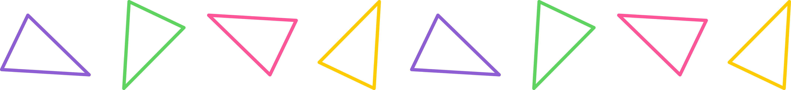

Problem of the Week
Problem E and Solution
Terry’s Triangles
Problem
Terry is drawing isosceles triangles with side lengths \(a\), \(b\), and \(c\) such that \[\begin{aligned}
a&=y-x\\
b&=x+z\\
c&=y-z\end{aligned}\] where \(x\), \(y\), and \(z\) are positive integers and \(x+y+z<10\).
Find all the possible triples \((a,b,c)\) that satisfy this.

Solution
In an isosceles triangle, two sides must have equal length. So we need to consider three cases: \(a=b\), \(b=c\), and \(a=c\). Also, in order for \(a\), \(b\), and \(c\) to represent side lengths of a triangle, they must be positive numbers and the sum of any two side lengths must be greater than the other side length.
Case 1: \(a=b\)
If \(a=b\), then \(y-x=x+z\), so \(y=2x+z\). We can make a table of all the values of \(x\), \(y\), and \(z\) that satisfy this equation as well as \(x+y+z<10\), and then find the corresponding values of \(a\), \(b\), and \(c\) and check if they are valid side lengths.
| \(x\) | \(y\) | \(z\) | \(a\) | \(b\) | \(c\) | Valid? |
|---|---|---|---|---|---|---|
| 1 | 3 | 1 | 2 | 2 | 2 | Yes |
| 1 | 4 | 2 | 3 | 3 | 2 | Yes |
| 1 | 5 | 3 | 4 | 4 | 2 | Yes |
| 2 | 5 | 1 | 3 | 3 | 4 | Yes |
Case 2: \(b=c\)
If \(b=c\), then \(x+z=y-z\), so \(y=x+2z\). As in Case 1, we can write the possible values of \(x\), \(y\), \(z\), \(a\), \(b\), and \(c\) in a table.
| \(x\) | \(y\) | \(z\) | \(a\) | \(b\) | \(c\) | Valid? |
|---|---|---|---|---|---|---|
| 1 | 3 | 1 | 2 | 2 | 2 | Yes |
| 2 | 4 | 1 | 2 | 3 | 3 | Yes |
| 3 | 5 | 1 | 2 | 4 | 4 | Yes |
| 1 | 5 | 2 | 4 | 3 | 3 | Yes |
Case 3: \(a=c\)
If \(a=c\), then \(y-x=y-z\), so \(x=z\). As in previous cases, we can write the possible values of \(x\), \(y\), \(z\), \(a\), \(b\), and \(c\) in a table.
| \(x\) | \(y\) | \(z\) | \(a\) | \(b\) | \(c\) | Valid? |
|---|---|---|---|---|---|---|
| 1 | 1 | 1 | 0 | 2 | 0 | No (\(a\) and \(c\) are not positive) |
| 1 | 2 | 1 | 1 | 2 | 1 | No (\(a+c \not>b\)) |
| 1 | 3 | 1 | 2 | 2 | 2 | Yes |
| 1 | 4 | 1 | 3 | 2 | 3 | Yes |
| 1 | 5 | 1 | 4 | 2 | 4 | Yes |
| 1 | 6 | 1 | 5 | 2 | 5 | Yes |
| 1 | 7 | 1 | 6 | 2 | 6 | Yes |
| 2 | 1 | 2 | \(-1\) | 4 | \(-1\) | No (\(a\) and \(c\) are not positive) |
| 2 | 2 | 2 | 0 | 4 | 0 | No (\(a\) and \(c\) are not positive) |
| 2 | 3 | 2 | 1 | 4 | 1 | No (\(a+c \not>b\)) |
| 2 | 4 | 2 | 2 | 4 | 2 | No (\(a+c \not>b\)) |
| 2 | 5 | 2 | 3 | 4 | 3 | Yes |
| 3 | 1 | 3 | \(-2\) | 6 | \(-2\) | No (\(a\) and \(c\) are not positive) |
| 3 | 2 | 3 | \(-1\) | 6 | \(-1\) | No (\(a\) and \(c\) are not positive) |
| 3 | 3 | 3 | 0 | 6 | 0 | No (\(a\) and \(c\) are not positive) |
| 4 | 1 | 4 | \(-3\) | 8 | \(-3\) | No (\(a\) and \(c\) are not positive) |
Therefore, there are 12 possible triples \((a,b,c)\). They are listed below. \[\begin{aligned} &(2,2,2)\quad(3,3,2)\quad(4,4,2)\quad(3,3,4)\\ &(2,3,3)\quad(2,4,4)\quad(4,3,3)\\ &(3,2,3)\quad(4,2,4)\quad(5,2,5)\quad(6,2,6)\quad(3,4,3)\end{aligned}\]